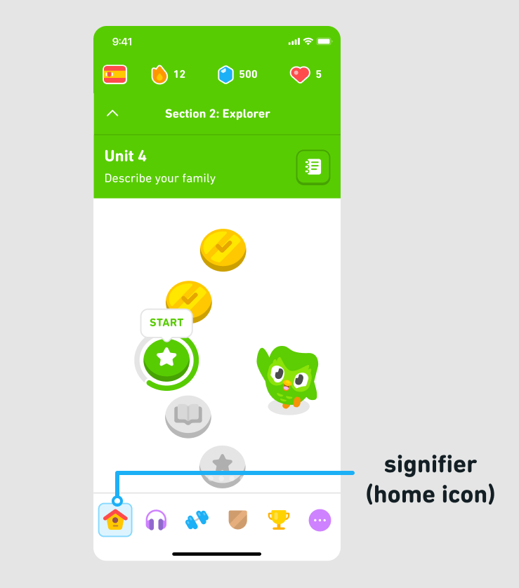

Another way to make features self-explanatory is through the use of signifiers. Signifiers are cues, such as icons, that tell people how to use an object or system. For example, our home tab is illustrated with a house icon, which helps users intuitively know how to navigate to the home screen.  Labels can be also be helpful signifiers that clarify UI elements. But they can also act as a crutch for poor design. Consider, for example, doors that have "push" or "pull" labels. These labels aren't truly necessary — the door could be designed to make better use of affordances instead. A well-designed door, for instance, might not have a handle on the side where you're meant to push, removing the need for a label altogether.
CONTINUE BACK